Projet 7 · Ingénieur IA
Concevoir, comparer et mettre en production un modèle capable de prédire le sentiment d'un tweet, pour permettre à la compagnie aérienne Air Paradis d'anticiper les bad buzz.
Dimitri Wyts
MIC · Marketing Intelligence Consulting
Le besoin d'Air Paradis, le jeu de données, le nettoyage et ce que l'exploration a révélé.
Modèle classique, modèle sur mesure avancé, BERT. Ce qu'elles font, pourquoi ces choix, et leurs résultats.
Pourquoi la lecture naïve des scores est trompeuse, et ce que donne une comparaison honnête.
Suivi des expérimentations, centralisation des modèles, versioning, tests automatisés, déploiement continu.
L'API sur le cloud, ce qui casse entre le notebook et la production, le suivi de la performance et les alertes.
La réponse au client et la démarche d'amélioration du modèle dans le temps.
« Air Paradis veut un prototype d'un produit IA permettant de prédire le sentiment associé à un tweet. »
Air Paradis n'a pas toujours bonne presse sur les réseaux sociaux.
Un message négatif repéré dans l'heure se traite. Le même repéré trois jours plus tard est devenu une crise.
Aucune donnée client exploitable chez Air Paradis.
Il faut donc partir de données open source, et accepter les limites de ce qu'elles contiennent.
Marc, mon manager, veut « faire d'une pierre deux coups » : un prototype pour le client, et une démarche MLOps exemplaire diffusable aux autres équipes.
Trois approches comparées, de la régression logistique aux modèles de langue pré-entraînés. Le modèle avancé exposé par une API déployée sur le cloud, appelée depuis une interface locale.
Le coût des deux erreurs n'est pas symétrique. Rater un tweet négatif, c'est une crise qui démarre sans qu'on la voie. Signaler à tort un tweet positif, c'est trente secondes perdues pour un chargé de communication.
Python 3.13 dans un environnement virtuel isolé, pour que la liste des packages livrée ne contienne que ce dont le projet a besoin.
VS Code pour les notebooks et le code, Git dès le premier jour.
Un ordinateur portable, 16 Go de mémoire, aucune carte graphique dédiée.
Cette contrainte a dicté presque toutes les décisions techniques du projet, et je la documente à chaque fois.
Mesurer avant de décider. Chaque choix d'architecture ou de réglage a été précédé d'un chronométrage sur un échantillon réduit.
Cela m'a évité de lancer des entraînements de plusieurs heures pour rien, et plusieurs fois de me tromper.
Deux mondes séparés : src/ pour la recherche, qui peut dépendre de
TensorFlow, et api/ pour la production, qui doit tenir dans 1 Go.
Un seul fichier traverse la frontière, et c'est le sujet de la diapositive 7.
Des tweets collectés en 2009, avec leur texte, leur auteur, leur date, et une étiquette binaire.
Je n'utilise que le texte et l'étiquette : l'API ne recevra qu'un texte, entraîner le modèle sur des informations qu'il n'aura pas en production n'aurait aucun sens.
L'étiquetage a été fait automatiquement : un tweet contenant une émoticône souriante a été classé positif, un tweet avec une émoticône triste, négatif. Les émoticônes ont ensuite été retirées du texte pour que le modèle ne puisse pas tricher.
C'est ingénieux, mais imparfait : un tweet ironique accompagné d'un smiley se retrouve étiqueté positif à tort.
Conséquence directe : il existe un plafond de performance qu'aucun modèle ne pourra franchir, situé autour de 85 % selon la littérature. Il faut le dire au client plutôt que de lui promettre 99 %.
pandas et numpy pour charger, filtrer et transformer les 1,6 million de tweets. pyarrow pour le format Parquet, cinq fois plus compact qu'un CSV et bien plus rapide à relire.
scikit-learn fournit TF-IDF, la régression logistique, le découpage entraînement/test et toutes les métriques. C'est la bibliothèque de référence de l'apprentissage automatique classique.
TensorFlow et sa surcouche Keras pour le réseau de neurones. gensim pour entraîner les vecteurs de mots et télécharger ceux de GloVe.
PyTorch en version processeur uniquement, et transformers qui donne accès aux modèles pré-entraînés. La version GPU de PyTorch pèse 2,5 Go pour rien sur cette machine.
MLflow pour le suivi des expérimentations et le catalogue de modèles. pytest pour les tests automatisés. FastAPI et uvicorn pour l'API.
ai-edge-litert exécute le modèle allégé sur le serveur, à la place de TensorFlow. streamlit pour l'interface de test, azure-monitor-opentelemetry pour les traces.
Suppression des liens et des mentions, qui n'apportent rien au sentiment mais gonflent le vocabulaire puisque chacun est unique. Décodage des caractères du web, réduction des lettres répétées, retrait de la ponctuation.
Les outils proposent une liste de mots trop courants à supprimer. Le problème est que ces listes toutes faites contiennent les négations.
« this flight was not good »
↓ retrait des mots vides standard
« flight good »
Le sens est exactement inversé. Le modèle apprend le contraire de ce qu'il faut.
Une liste expurgée de toute négation, de tout intensificateur et de tout contrastif. Et un test automatique qui échoue si quelqu'un y réintroduit un jour un de ces mots.
Ce module de nettoyage est écrit sans aucune dépendance externe, uniquement avec la bibliothèque standard de Python. C'est ce qui permettra de le faire tourner tel quel sur le serveur de production, qui ne dispose que d'un gigaoctet de mémoire.
Mesuré sur le texte nettoyé, pas sur le texte brut. Ce seuil couvre 99,98 % des tweets et économise 20 % de temps de calcul par rapport à 40.
Messages banals, et surtout du spam de robots republié jusqu'à 1 484 fois. Le nettoyage les rend identiques en retirant les pseudos qui les différenciaient.
Entre tweets négatifs et positifs. Le vocabulaire des deux classes est nettement différencié : le signal existe dans les mots pris isolément.
Le découpage entre données d'entraînement et données de test se fait au hasard. Si un même texte apparaît 500 fois, il se retrouve mécaniquement des deux côtés. Le modèle l'a donc déjà vu pendant l'entraînement : au moment du test, il le reconnaît au lieu de le comprendre.
On appelle cela une fuite de données. Le score mesuré devient optimiste, et le modèle paraît meilleur qu'il ne le sera en production, où il ne rencontrera que des tweets inédits. Sans cette correction, tous les chiffres de cette présentation seraient flatteurs et faux.
Partie II
De la régression logistique au modèle de langue pré-entraîné. Pour chacune : ce que c'est, à quoi ça sert, pourquoi ce choix, et ce que ça donne.
TF-IDF et régression logistique. Le tweet devient un sac de mots pondérés, sans notion d'ordre.
Word embeddings et réseau de neurones récurrent. Le modèle lit enfin la phrase dans l'ordre.
Un modèle de langue pré-entraîné sur des milliards de mots, qui comprend le contexte de chaque mot.
Approche 1 · Modèle sur mesure simple
Un modèle ne sait manipuler que des nombres. Il faut donc transformer chaque tweet en une liste de nombres.
Term Frequency, Inverse Document Frequency. Un mot est important s'il est fréquent dans ce tweet-ci, mais rare dans l'ensemble des tweets.
Le mot the apparaît partout, il ne distingue rien, son poids s'effondre. Le mot terrible est rare, donc très informatif, son poids monte.
Parce qu'un comptage brut donnerait le plus de poids aux mots les plus fréquents, c'est-à-dire à ceux qui n'apprennent rien. TF-IDF corrige exactement ce défaut, et c'est pourquoi c'est la méthode de référence depuis des décennies.
Elle apprend un poids par mot, puis les combine pour trancher.
Son grand avantage : elle est directement interprétable. On peut ouvrir le modèle et lire mot par mot ce qu'il a retenu, ce qui est impossible avec un réseau de neurones. Pour une audience non technique, c'est un argument précieux.
Cette approche traite le tweet comme un sac de mots : elle compte les mots présents mais ignore complètement leur ordre.
« not good » = « good not »
C'est précisément la faiblesse que les approches 2 et 3 viendront corriger.
Approche 1 · Modèle sur mesure simple
| Configuration | n-grammes | Mots vides | Exactitude | AUC ROC | Durée |
|---|---|---|---|---|---|
| Référence, réponse au hasard | 0,4989 | 0,4989 | |||
| Mots seuls | 1 | conservés | 0,7980 | 0,8766 | 18 s |
| Mots seuls, sans mots vides | 1 | retirés | 0,7894 | 0,8679 | 11 s |
| Avec paires de mots | 1 et 2 | conservés | 0,8218 | 0,9006 | 54 s |
| Avec paires, sans mots vides | 1 et 2 | retirés | 0,8076 | 0,8865 | 41 s |
Retirer les mots vides fait perdre 1,4 point quand on utilise les paires de mots. C'est l'inverse de ce qu'enseignent la plupart des tutoriels.
Rétrospectivement c'est logique : les paires ont besoin de ces mots pour exister. Supprimer not avant de former « not good » détruit précisément l'information qu'on cherchait à capturer.
Le plan d'expérimentation complet, quatre configurations pour deux facteurs, coûte deux minutes de calcul et évite de décider à l'intuition.
Les quatre essais sont enregistrés dans MLflow avec leurs réglages et leurs scores. La décision se prend sur la mesure, et elle reste vérifiable des mois plus tard.
Modèle retenu : paires de mots, mots vides conservés, entraîné sur les 1 214 000 tweets d'entraînement.
Approche 2 · Modèle sur mesure avancé
Après découpage, le mot terrible devient le numéro 4271 et awful le numéro 5893. Ces numéros traduisent la fréquence, pas le sens. Rien ne dit au modèle que ces deux mots veulent dire à peu près la même chose.
Chaque mot est remplacé par une liste de 200 nombres, apprise de telle façon que deux mots employés dans des contextes similaires reçoivent des listes similaires.
Le modèle peut alors généraliser : s'il a beaucoup vu awful, il saura traiter terrible même s'il l'a peu rencontré.
« On connaît un mot à la compagnie qu'il fréquente. »
John Firth, linguiste, 1957
Si terrible et awful apparaissent tous les deux souvent après « this was » et avant « experience », alors ils ont probablement un sens proche. Aucune connaissance du dictionnaire n'est nécessaire, seulement des statistiques d'usage.
Il lit le tweet mot après mot, dans l'ordre, en gardant une mémoire de ce qu'il a déjà lu. C'est ce qui lui permet de comprendre qu'un not placé au début modifie un good qui arrive trois mots plus loin.
Approche 2 · Modèle sur mesure avancé
240 000 tweets, les nôtres. Les vecteurs collent exactement à notre domaine, le langage des tweets de 2009.
Inconvénient : c'est peu pour apprendre le sens de 20 000 mots.
2 milliards de tweets, publié par l'université Stanford. Une connaissance de la langue incomparablement plus riche.
Inconvénient : il ne connaît pas les particularités de notre corpus.
| Source | Les six mots les plus proches | Pertinents |
|---|---|---|
| Word2Vec 240 000 tweets |
yesterdays, boarding, closing, postponed, council, rapid | 1 / 6 |
| GloVe 2 milliards de tweets |
delay, postponed, delays, cancelled, canceled, scheduled | 6 / 6 |
GloVe l'emporte de 1,26 point d'exactitude, et l'on peut voir pourquoi plutôt que de se contenter du score. Détail savoureux : les 183 mots de notre vocabulaire absents de GloVe sont des noms d'applications Twitter de 2009 disparues depuis, twitterberry, ubertwitter, twitterfon. Notre corpus a quinze ans.
Approche 2 · Modèle sur mesure avancé
Deux types de réseaux récurrents s'imposent en pratique. Le LSTM possède trois portes qui décident à chaque mot ce qu'il faut garder en mémoire, oublier, et sortir. Le GRU fait la même chose avec deux portes : il est plus léger.
La littérature dit que les deux se valent souvent. Plutôt que de choisir par habitude, j'ai mesuré sur une époque, avec exactement les mêmes données.
On lit le tweet deux fois, du début à la fin puis de la fin au début. Le sens d'un mot dépend autant de ce qui le suit que de ce qui le précède.
| Architecture | Temps par époque | Score de validation |
|---|---|---|
| LSTM bidirectionnel 64 | 74,9 s | 0,7982 |
| GRU bidirectionnel 64 | 56,3 s | 0,7989 |
Le GRU est 25 % plus rapide pour un score identique. Aucune raison de prendre le LSTM.
La même méthode a servi pour la taille des lots : 512 s'est révélé à la fois plus rapide et plus performant que 256.
Ces mesures prennent quelques minutes et font gagner des heures sur l'ensemble du projet.
Approche 2 · Modèle sur mesure avancé
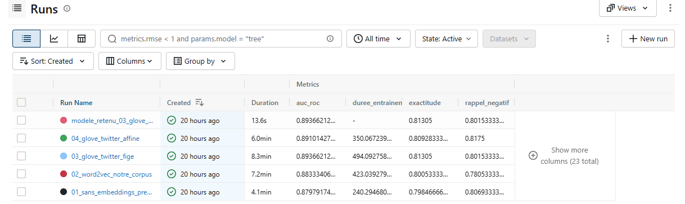
Les quatre entraînements enregistrés dans MLflow, avec leurs scores et leur durée. Cliquez sur l'image pour l'agrandir.
Sans embeddings pré-entraînés : que vaut le réseau sans aide extérieure ? C'est la référence.
Word2Vec figé : un corpus petit mais parfaitement adapté.
GloVe figé : un corpus 8 000 fois plus gros mais générique.
GloVe affiné : et si on laisse le réseau adapter GloVe ?
Les embeddings pré-entraînés apportent +1,5 point par rapport à un apprentissage depuis zéro.
Figer vaut mieux qu'affiner : 0,8131 contre 0,8093. Avec seulement 240 000 tweets, laisser bouger 4 millions de paramètres fait sur-apprendre. C'est à la fois moins cher et meilleur.
Approche 3 · Modèle avancé BERT
Un mot a un seul vecteur, quel que soit son contexte. Dans « the room is light » et « this bag is light », le mot light a exactement la même représentation. Le modèle doit deviner lequel des deux sens s'applique.
Il produit un vecteur différent pour chaque occurrence, calculé en fonction de tous les autres mots de la phrase. C'est une représentation contextuelle.
Le mécanisme s'appelle l'attention : pour chaque mot, le modèle calcule à quel point chacun des autres lui est utile. Dans « the flight was not good », le mot good regarde directement not, sans avoir à faire circuler l'information de proche en proche.
BERT a été pré-entraîné par Google sur des milliards de mots, à un jeu simple : on lui masque des mots au hasard et on lui demande de les deviner. Pour y arriver, il a bien fallu qu'il apprenne le fonctionnement de l'anglais.
On récupère ce modèle déjà entraîné et on l'adapte à notre tâche : au lieu de partir de zéro, on part de quelqu'un qui sait déjà lire.
DistilBERT est une version allégée : 40 % plus petite, 60 % plus rapide, et elle conserve environ 97 % des performances.
Sans carte graphique, c'était le seul choix raisonnable. Il compte tout de même 66 millions de paramètres.
Approche 3 · Modèle avancé BERT
Marc demandait « si nous devons investir dans ce type de modèle ». La réponse n'est donc pas seulement un score : c'est un score rapporté à son coût. J'ai mesuré le débit de DistilBERT sur ce processeur avant de concevoir le notebook.
| Stratégie | Débit | 10 000 tweets | 50 000 tweets |
|---|---|---|---|
| BERT figé, calculs « aller » seulement, lots de 32 | 32,7 tweets/s | 5 min | 25 min |
| BERT figé, lots de 64 | 27,3 tweets/s | 6 min | 30 min |
| Affinage, « aller » et « retour », lots de 32 | 7,2 tweets/s | 23 min par époque | 115 min par époque |
| Affinage, lots de 16 | 6,6 tweets/s | 25 min par époque | 126 min par époque |
Ce qui correspond à la théorie : la rétropropagation coûte environ deux fois l'aller, plus la mise à jour des poids.
Contrairement au réseau récurrent, BERT sature déjà le processeur avec des lots de 32. C'est le calcul qui limite, pas la mémoire.
10 000 tweets et non 50 000. Affiner sur 50 000 aurait demandé près de 4 heures par passage. À garder en tête pour la comparaison.
Approche 3 · Modèle avancé BERT
Le plus mauvais score de tout le projet. Un modèle de 66 millions de paramètres se fait battre par une régression logistique.
+3 points pour un coût de calcul 7 fois supérieur. L'affinage n'est pas une option, c'est une nécessité.
BERT a été pré-entraîné à deviner des mots masqués, pas à résumer des phrases. Le vecteur qu'on récupère pour représenter le tweet entier n'a jamais été entraîné à porter un sens global : il n'a été entraîné à rien du tout tant qu'on ne l'affine pas.
C'est un résultat documenté dans la littérature, et c'est ce qui a motivé la création de modèles spécialisés comme Sentence-BERT. Sans affinage, BERT est un moteur puissant mais débrayé.
Partie III
Les trois approches sont mesurées. Mais les comparer directement serait une erreur, et le résultat en serait faux.
| Approche | Exactitude | Tweets vus |
|---|---|---|
| Classique | 82,2 % | 1 214 000 |
| Avancé | 81,3 % | 240 000 |
| BERT | 79,9 % | 8 000 |
Le classement est exactement inverse de la sophistication. On pourrait en conclure que l'IA moderne ne sert à rien, et c'est d'ailleurs ce qu'on lit parfois.
1. La quantité de données. Regardez la dernière colonne : il y a un facteur 150 entre le premier et le dernier. Je ne comparais pas trois modèles, je comparais trois quantités de données.
2. Les jeux de test. Chaque notebook avait tiré son propre échantillon, donc son propre jeu de test. Pire : un tweet du test de BERT pouvait très bien avoir servi à entraîner le modèle avancé.
Un jeu de test commun de 4 000 tweets qu'aucun des trois modèles n'avait jamais vus à l'entraînement. C'est possible parce que la déduplication rend chaque texte unique et donc utilisable comme identifiant.
Puis la courbe d'apprentissage du modèle classique, sur laquelle je place les deux autres.
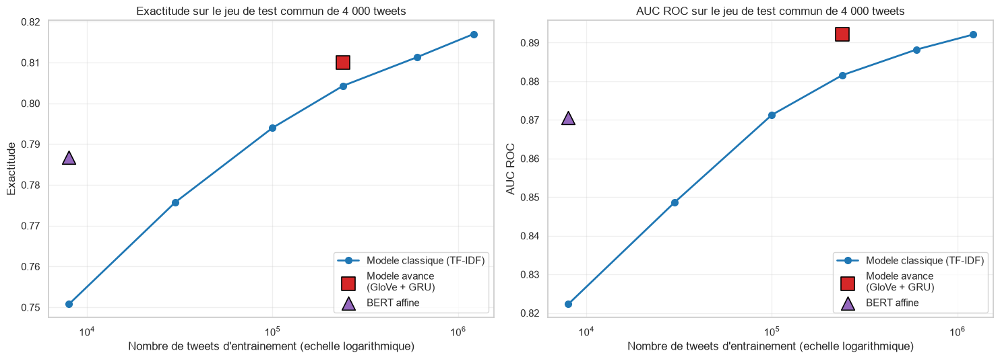
La courbe bleue montre ce qu'obtient une régression logistique selon la quantité de données. C'est la référence. Les deux autres modèles sont placés au nombre de tweets qu'ils ont réellement vus.
Au-dessus de la courbe : le modèle fait mieux qu'une méthode simple disposant des mêmes données, sa complexité apporte quelque chose. En dessous : l'inverse.
| Modèle | Tweets | Lui | Le classique | Écart |
|---|---|---|---|---|
| Avancé | 240 000 | 81,0 % | 80,4 % | +0,6 pt |
| BERT | 8 000 | 78,7 % | 75,1 % | +3,6 pt |
Les deux modèles avancés gagnent. Le classement initial était entièrement un artefact de la quantité de données. Et l'écart grandit quand les données se raréfient : c'est la signature du transfert d'apprentissage.
Un pourcentage global cache les cas particuliers. Or pour Air Paradis, un cas compte plus que les autres. Voici des paires de phrases identiques à un mot près. La valeur est la probabilité que le tweet soit positif : plus elle est basse sur la ligne négative, mieux c'est.
| Phrase | Modèle avancé | BERT | Lecture |
|---|---|---|---|
| this flight was good | 0,941 | 0,972 | Les deux effondrent le score. Réussi. |
| this flight was not good | 0,032 | 0,027 | |
| the crew was helpful | 0,949 | 0,974 | BERT réussit, le modèle avancé échoue. |
| the crew was never helpful | 0,624 | 0,052 | |
| i would recommend it | 0,952 | 0,969 | Le modèle avancé réussit, BERT échoue. |
| i would not recommend it | 0,209 | 0,776 |
Les deux modèles gèrent la négation, ce dont le modèle classique était structurellement incapable puisqu'il ne voit pas l'ordre des mots.
Ils n'ont pas les mêmes angles morts : chacun réussit là où l'autre échoue. Un écart d'un demi-point d'exactitude ne dit rien de cela.
Partie IV
MLOps est la contraction de Machine Learning et Operations. C'est l'ensemble des pratiques qui font qu'un modèle ne reste pas coincé dans un notebook, mais qu'il finit en production, surveillé, et qu'on puisse le remplacer sans tout casser.
Chaque expérimentation enregistrée avec ses réglages et ses scores.
48 tests automatisés, exécutés avant chaque mise en ligne.
Des traces en production et une alerte quand le modèle dérive.
MLOps · Brique 1 et 2
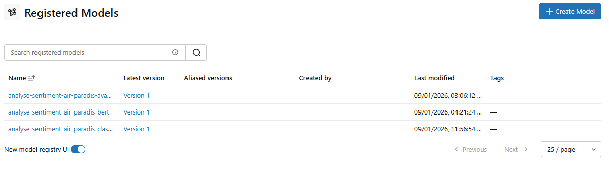
Le catalogue de modèles : les trois approches enregistrées et versionnées.
14 entraînements enregistrés avec leurs réglages, leurs scores et leur durée. Sans cela, au bout de quinze essais, plus personne ne sait quelle configuration avait donné le meilleur résultat ni avec quels paramètres.
Les graphiques, matrices de confusion et courbes ROC sont attachés à chaque expérimentation et restent consultables une fois le notebook fermé.
Le catalogue apporte trois choses qu'un simple fichier sauvegardé n'apporte pas : un numéro de version, une signature qui décrit ce que le modèle attend en entrée, et le lien vers l'expérimentation qui l'a produit.
Un point de méthode : chaque modèle enregistré a été rechargé et retesté. Un modèle qu'on n'a pas ressorti n'est pas un modèle enregistré.
MLOps · Brique 3
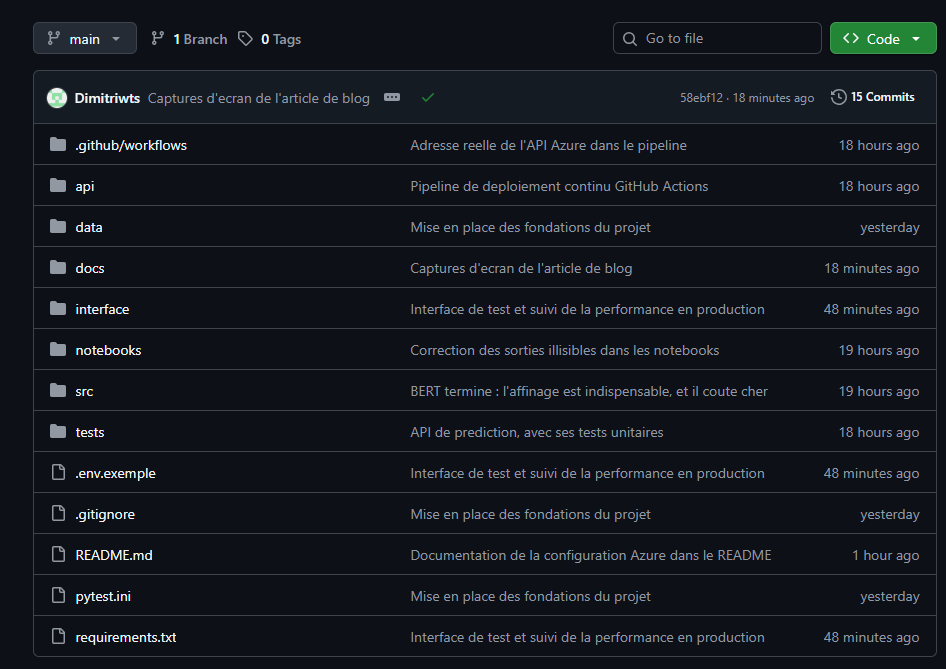
github.com/Dimitriwts/projet7-analyse-sentiments
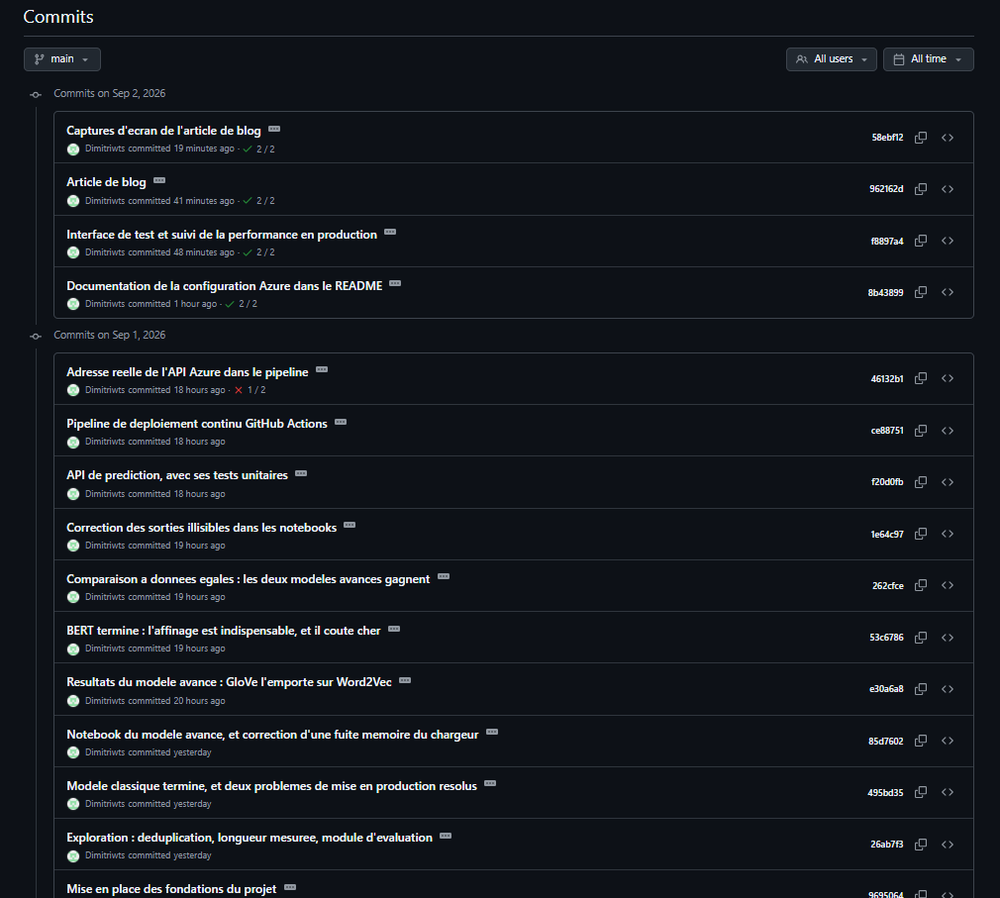
L'historique des commits.
Un message comme « correction bug » n'apprend rien à personne. Chaque commit de ce projet explique pourquoi le changement a été fait, avec les chiffres qui l'ont motivé. Exemple réel : « Retirer les mots vides dégrade le modèle de 1,4 point : les bigrammes ont besoin de ces mots pour former "not good" ».
Six mois plus tard, c'est cet historique qui permet de comprendre une décision sans avoir à la redécouvrir. C'est aussi ce qui rend le dépôt lisible par quelqu'un d'autre que moi.
MLOps · Brique 4
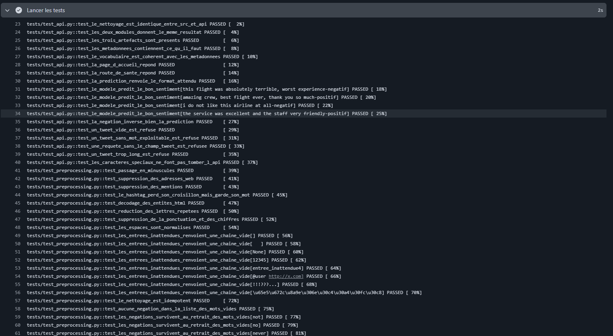
Les 48 tests exécutés automatiquement dans le pipeline, avant tout déploiement.
1. La synchronisation du nettoyage entre entraînement et production. 2. La présence et la cohérence des artefacts du modèle. 3. Les réponses des routes de l'API. 4. Le refus propre des entrées invalides.
test_le_nettoyage_est_identique_entre_src_et_api
Le tweet doit être nettoyé exactement de la même façon à l'entraînement et en production. Si les deux versions divergent, le modèle reçoit en ligne un texte qui ne ressemble pas à ce qu'il a appris, et ses réponses se dégradent sans qu'aucune erreur ne s'affiche nulle part.
Ce piège porte un nom, le training/serving skew. Ce test le rend impossible : si les deux fichiers diffèrent d'un seul octet, le déploiement échoue.
MLOps · Brique 5
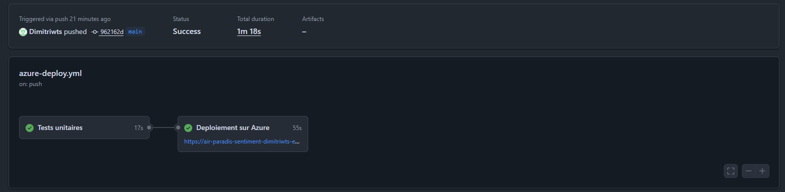
Chaque envoi de code déclenche les tests, puis le déploiement s'ils passent tous.
Ils s'exécutent avec les dépendances de l'API et non celles de la modélisation : ils doivent tourner dans le même environnement que la production, sinon ils ne prouvent rien.
Le job de déploiement dépend du job de tests. Si un seul test échoue, il est annulé et la version en ligne reste celle qui marchait. Personne ne peut mettre en ligne une version cassée.
Le pipeline interroge la route de santé de l'API après déploiement. Un déploiement peut réussir sans que l'application démarre : mieux vaut échouer franchement que laisser croire que tout va bien.
Partie V
Un modèle qui fonctionne dans un notebook ne vaut rien tant qu'il n'est pas en ligne. C'est là que j'ai passé autant de temps qu'à le construire, et c'est là que se trouvaient les vraies difficultés.
Le serveur gratuit est limité à 1 Go de mémoire, quand TensorFlow en pèse 600 à la seule installation.
Solution : conversion au format TensorFlow Lite. De plusieurs centaines de mégaoctets à 4,2 Mo, sans perdre un point de performance. La conversion a d'ailleurs échoué au premier essai, il a fallu reconstruire le réseau avec deux options particulières.
L'enregistrement d'un modèle est resté bloqué 46 minutes sans message d'erreur.
Diagnostic avec un outil de vidage de pile : la bibliothèque avait changé son format de sauvegarde par défaut pour un format plus sûr, mais qui parcourt l'objet élément par élément. Avec 300 000 termes de vocabulaire, cela ne se terminait jamais.
Un cycle est passé de 65 à 941 secondes sans qu'une ligne de code ait changé.
La cause n'était pas le modèle mais la mémoire : la machine saturée écrivait sur le disque. Un chargement de données trop gourmand a été corrigé, ramenant l'occupation de 1 068 Mo à 45 Mo.
Aucun de ces trois incidents ne provoque d'erreur visible. Le système continue de fonctionner, simplement mal. Un modèle qui met quinze fois plus de temps, une sauvegarde qui traîne, une conversion qu'on croit réussie : rien ne s'affiche en rouge.
C'est exactement ce que la démarche MLOps cherche à rendre détectable, et c'est pourquoi chaque transformation du modèle a été suivie d'une vérification chiffrée.
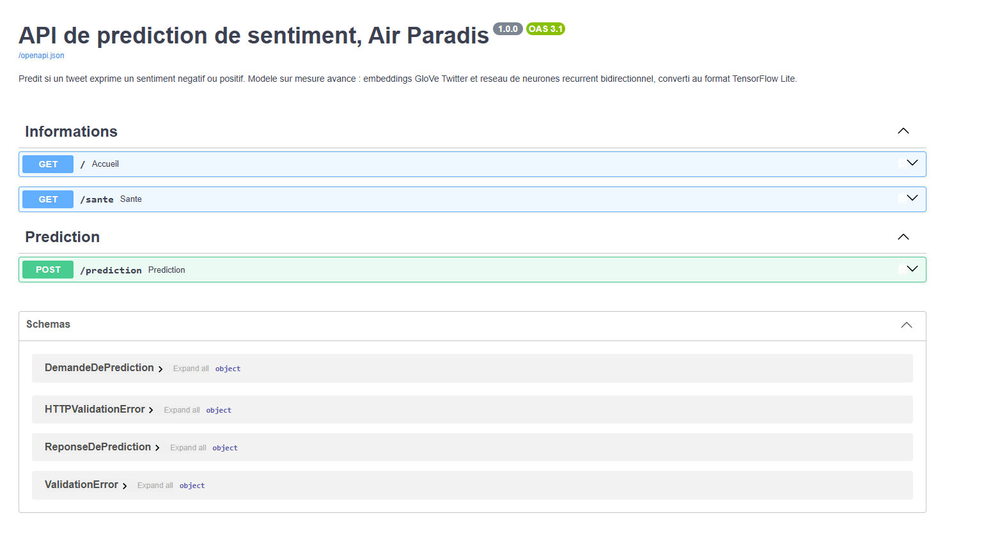
La documentation interactive, générée automatiquement par FastAPI.
/ décrit l'API et le modèle réellement déployé. /sante est interrogée par Azure pour vérifier que l'application vit. /prediction reçoit un texte brut et renvoie un sentiment.
Ni TensorFlow, ni pandas, ni scikit-learn. C'est une contrainte matérielle, pas une coquetterie. Moins il y a de code en production, moins il y a de choses qui peuvent casser.
Les prédictions en ligne sont identiques au chiffre près à celles mesurées en local. « the flight was not good » donne 0,0365 sur ma machine comme sur le serveur.
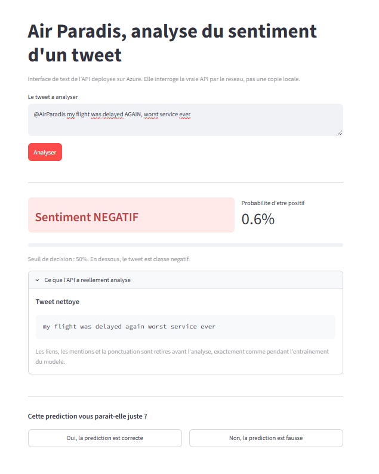
L'interface interroge l'API déployée et demande à l'utilisateur de valider.
Un modèle se dégrade avec le temps. Le langage évolue, les sujets changent, et les tweets d'aujourd'hui ne ressemblent plus à ceux de 2009 sur lesquels il a appris. On appelle cela la dérive.
Son danger est qu'elle ne se voit pas : le modèle continue de répondre avec assurance, simplement il se trompe plus souvent. Demander à l'utilisateur de signaler les erreurs est le moyen le plus direct de la détecter.
Pas seulement « il y a eu une erreur », mais de quoi en faire quelque chose : le tweet, sa version nettoyée, le sentiment prédit, la probabilité, et l'écart au seuil de décision.
Ce dernier champ distingue un modèle qui se trompe en hésitant, ce qui est acceptable, d'un modèle qui se trompe avec aplomb, ce qui l'est beaucoup moins. Aucun score global ne montre cela.
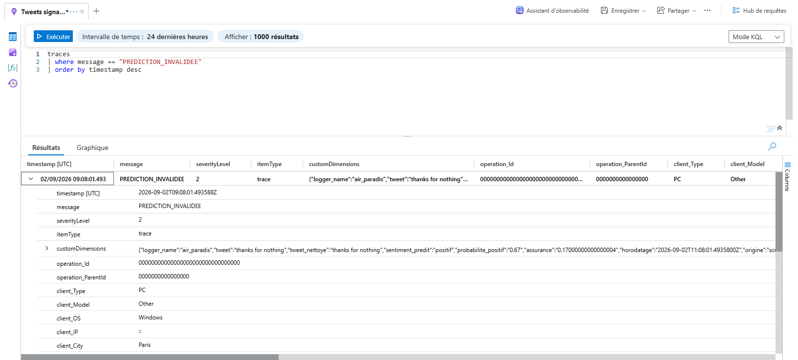
Les traces structurées dans Application Insights, interrogeables en KQL.
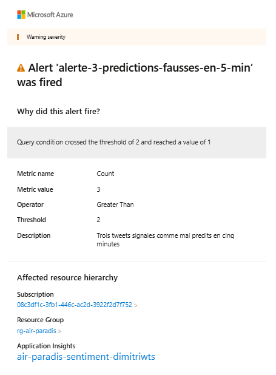
Le courriel reçu : valeur mesurée 3, seuil 2.
Trois prédictions contestées en cinq minutes déclenchent un courriel. Test réel : trois traces envoyées à 11 h 08, alerte déclenchée à 11 h 09, courriel reçu dans la foulée.
La première version envoyait cinq courriels pour un seul incident, parce que la règle réévaluait la même fenêtre chaque minute. Corrigé en rendant l'alerte persistante. C'est un problème connu, la fatigue d'alerte : un système qui crie trop finit par ne plus être écouté.
Les traces collectées ne servent pas seulement à alerter. Elles sont la matière première d'un cycle d'amélioration continue, et toute l'infrastructure nécessaire est déjà en place.
Sur quels types de tweets le modèle se trompe-t-il ? Les messages courts, l'ironie, un vocabulaire apparu récemment ?
Un tableau de bord suivant le taux de contestation semaine après semaine rendrait la dérive visible avant qu'elle ne devienne un problème.
Les tweets signalés forment un jeu de données de grande valeur : ce sont exactement les cas difficiles.
Les faire étiqueter par un humain puis les ajouter aux données d'entraînement corrige le modèle là où il échoue vraiment, plutôt que de le renforcer là où il réussit déjà.
Dès que suffisamment de nouveaux exemples sont collectés, un modèle candidat est entraîné, comparé au modèle en place sur un jeu de test figé, et déployé seulement s'il fait mieux.
Le suivi des expérimentations, le catalogue de modèles, les tests et le déploiement automatique existent déjà : il ne manque que l'ordonnanceur.
Le modèle sur mesure avancé, comme le demandait le cahier des charges, et les mesures le confirment. Il l'emporte à données égales, comprend les négations, et se sert en 0,16 milliseconde pour 4,2 Mo.
Cela dépend de la quantité de données étiquetées. Avec 8 000 exemples, BERT écrase la régression logistique de 3,6 points. Avec 1,2 million déjà disponibles et sans carte graphique, le retour sur investissement est faible.
Investir dans BERT, ce n'est pas choisir un modèle, c'est acheter l'infrastructure qui va avec.
Mesurer plutôt que supposer. Trois de mes intuitions se sont révélées fausses : le retrait des mots vides, la cause d'un ralentissement, la supériorité du LSTM. À chaque fois, la mesure a tranché.
Une comparaison doit être honnête. Le classement brut des trois approches donnait un résultat faux. Il a fallu construire un jeu de test commun et une courbe d'apprentissage pour répondre vraiment à la question posée.
La moitié du travail est après la modélisation. Faire sortir le modèle du notebook m'a pris autant de temps que de le construire, et c'est là que se trouvaient les vraies difficultés.
Des questions ?
Le dépôt : github.com/Dimitriwts/projet7-analyse-sentiments
L'API en ligne : air-paradis-sentiment-dimitriwts-e5fqa2gtcqb7czgc.francecentral-01.azurewebsites.net